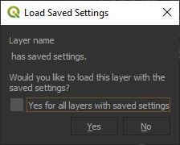
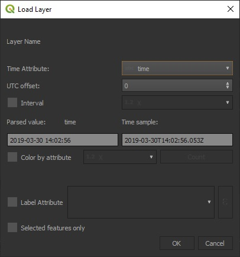
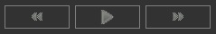
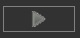
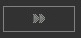
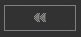
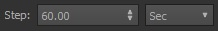
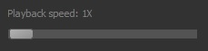
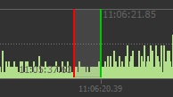
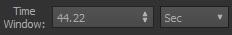

The Qgis Time Data Control is a component that brings to Qgis the ability to animate vector map layers that have a time attribute. Below is an annotated illustration of the QTDC user interface that identifies each of its elements.
- Begin by loading a vector layer that has a time attribute on the Qgis map. Time attributes can be Date/Datetime fields, numeric fields containing epoch values, or even some text time formats will work.
- Center the map on the layer.
- Select the name of the layer in the Qgis 'layers' pane, and click the 'Load Layer' button on the QTDC window.
(NOTE: If the selected layer was previously loaded in QTDC, an
option dialog will be presented allowing you to use the selections that were previously made when loading the layer. If not the
Load Layer dialog will appear.)

Option Dialog
|

Load Layer Dialog
|
- In the Load Layer dialog, select the attribute containing time values with the 'Time Attribute' combo box.
- Examine the values in the "Parsed value" section of the dialog to confirm the selected attribute is correct.
- Click the 'OK' button to commence loading.
When loading has completed, a histogram timeline should appear in the QTDC window representing the data of the layer. The visible checkbox of the loaded layer will also become unchecked in the 'Layers' pane so the layer's data won't obscure animation.
- Click the mouse on the timeline histogram to initialize the position of the Visible Data Time Window.
Map data animation can be controlled in various ways with QTDC. These include using the Animation Buttons and the Visible Data Time Window.
Animation Buttons

The Animation Button controls consist of 3 buttons on the QTDC window: Play/Pause , Forward/Step , and Reverse/Step 
- Click the Play/Pause button to toggle between play and paused animation. As animation plays, the Visible Data Time Window advances along the timeline in the direction of play.
- Click the Forward/Step button to set the animation direction to forward and when animation is paused, to step forward on the timeline by the amount of time specified in the step size field. 
- Click the Reverse/Step button to set the animation direction to backward and when animation is paused, to step backward on the timeline by the amount of time specified in the step size field.
- The speed of animation play can be adjusted with the 'Playback Speed" slider control: 
When animation play reaches either end of the timeline histogram, animation will automatically pause.
Visible Data Time Window
The Visible Data Time Window serves as both an indicator of what portion of the timeline's data is displayed on the map, and an interactive control for selecting the time range of data to display on the map.
The Data Time Window is a shaded region on the main timeline histogram that is bordered by red and green vertical lines. 
Whenever the position of the Data Window is changed on the timeline, the data corresponding to the range of time it covers on the histogram timeline is displayed on the map.
The Data Window position and time range are controlled as follows:
- Click or drag the LEFT MOUSE button on the timeline to move the Data Window position.
- Drag the RIGHT MOUSE button on either the red or green line to expand or contract the Data Window time range.
- The Time Window field of the QTDC window can also be used to adjust the Data Window time range. 
Caution should be used when adjusting the Data Window time range to avoid making it too large as this can make Qgis unresponsive when the loaded layer contains large amounts of data.
Notice:
Portions of this software were produced for the U. S. Government under Contract No. FA8702-19-C-0001
and W56KGU-18-D-0004, and is subject to the Rights in Noncommercial Computer Software
and Noncommercial Computer Software Documentation Clause DFARS 252.227-7014 (FEB 2014)
(c) 2021 The MITRE Corporation
qtdc@mitre.org